제 2 장 모형의 진단과 수정
예제 3.3에 나온 중고차 가격자료를 이용한 R 실습입니다.
2.1 순차제곱합
순차제곱합은 모형에 들어가는 변수의 순서에 따라서 제곱합이 틀려진다.
다음의 예를 보면 두 모형이 같은 변수들로 적합되지만 순서가 달라지면 순차제곱합이 다르다.
model1 <- price ~ year + mileage + cc + automatic
model2 <- price ~ mileage + automatic + cc + year
fit1 <- lm(model1, usedcars)
fit2 <- lm(model2, usedcars)
anova(fit1)## Analysis of Variance Table
##
## Response: price
## Df Sum Sq Mean Sq F value Pr(>F)
## year 1 2056608 2056608 201.2036 1.841e-13 ***
## mileage 1 135864 135864 13.2919 0.0012228 **
## cc 1 52409 52409 5.1273 0.0324794 *
## automatic 1 175828 175828 17.2018 0.0003389 ***
## Residuals 25 255538 10222
## ---
## Signif. codes: 0 '***' 0.001 '**' 0.01 '*' 0.05 '.' 0.1 ' ' 1anova(fit2)## Analysis of Variance Table
##
## Response: price
## Df Sum Sq Mean Sq F value Pr(>F)
## mileage 1 1637355 1637355 160.1870 2.274e-12 ***
## automatic 1 341741 341741 33.4335 5.006e-06 ***
## cc 1 42683 42683 4.1758 0.05168 .
## year 1 398929 398929 39.0283 1.552e-06 ***
## Residuals 25 255538 10222
## ---
## Signif. codes: 0 '***' 0.001 '**' 0.01 '*' 0.05 '.' 0.1 ' ' 1하지만 회귀계수의 추정량은 동일하다.
summary(fit1)##
## Call:
## lm(formula = model1, data = usedcars)
##
## Residuals:
## Min 1Q Median 3Q Max
## -177.35 -63.91 -0.99 70.34 212.69
##
## Coefficients:
## Estimate Std. Error t value Pr(>|t|)
## (Intercept) 5.253e+02 3.998e+02 1.314 0.200823
## year -5.800e+00 9.283e-01 -6.247 1.55e-06 ***
## mileage -2.263e-03 7.211e-04 -3.138 0.004324 **
## cc 3.888e-01 2.022e-01 1.923 0.065958 .
## automatic 1.653e+02 3.986e+01 4.147 0.000339 ***
## ---
## Signif. codes: 0 '***' 0.001 '**' 0.01 '*' 0.05 '.' 0.1 ' ' 1
##
## Residual standard error: 101.1 on 25 degrees of freedom
## Multiple R-squared: 0.9045, Adjusted R-squared: 0.8892
## F-statistic: 59.21 on 4 and 25 DF, p-value: 2.184e-12summary(fit2)##
## Call:
## lm(formula = model2, data = usedcars)
##
## Residuals:
## Min 1Q Median 3Q Max
## -177.35 -63.91 -0.99 70.34 212.69
##
## Coefficients:
## Estimate Std. Error t value Pr(>|t|)
## (Intercept) 5.253e+02 3.998e+02 1.314 0.200823
## mileage -2.263e-03 7.211e-04 -3.138 0.004324 **
## automatic 1.653e+02 3.986e+01 4.147 0.000339 ***
## cc 3.888e-01 2.022e-01 1.923 0.065958 .
## year -5.800e+00 9.283e-01 -6.247 1.55e-06 ***
## ---
## Signif. codes: 0 '***' 0.001 '**' 0.01 '*' 0.05 '.' 0.1 ' ' 1
##
## Residual standard error: 101.1 on 25 degrees of freedom
## Multiple R-squared: 0.9045, Adjusted R-squared: 0.8892
## F-statistic: 59.21 on 4 and 25 DF, p-value: 2.184e-122.2 편제곱합
편제곱합은 다른 변수들로 보정된 제곱합으로 순서에 관계없이 일정하다.패키지 car 에 있는 함수 Anova 를 사용하면
편제곱합을 구할 수 있다.
Anova(fit1, type="III")## Anova Table (Type III tests)
##
## Response: price
## Sum Sq Df F value Pr(>F)
## (Intercept) 17645 1 1.7262 0.2008228
## year 398929 1 39.0283 1.552e-06 ***
## mileage 100649 1 9.8467 0.0043244 **
## cc 37794 1 3.6975 0.0659577 .
## automatic 175828 1 17.2018 0.0003389 ***
## Residuals 255538 25
## ---
## Signif. codes: 0 '***' 0.001 '**' 0.01 '*' 0.05 '.' 0.1 ' ' 1Anova(fit2, type="III")## Anova Table (Type III tests)
##
## Response: price
## Sum Sq Df F value Pr(>F)
## (Intercept) 17645 1 1.7262 0.2008228
## mileage 100649 1 9.8467 0.0043244 **
## automatic 175828 1 17.2018 0.0003389 ***
## cc 37794 1 3.6975 0.0659577 .
## year 398929 1 39.0283 1.552e-06 ***
## Residuals 255538 25
## ---
## Signif. codes: 0 '***' 0.001 '**' 0.01 '*' 0.05 '.' 0.1 ' ' 12.3 부분 F 검정
배기량(cc)에 대항 계수가 0인지 검정해보자.
\[ H_0: ~ \beta_k =0 \]
하나의 계수에 대한 검정은 분산분석 표의 t-검정으로도 가능하며 결과는 동일하다.
fullmodel <- price ~ year + mileage + cc + automatic
reducemodel1 <- price ~ year + mileage + automatic
fitfull <- lm(fullmodel, data=usedcars)
fitreduce1 <- lm(reducemodel1, data=usedcars)
anova(fitreduce1, fitfull)## Analysis of Variance Table
##
## Model 1: price ~ year + mileage + automatic
## Model 2: price ~ year + mileage + cc + automatic
## Res.Df RSS Df Sum of Sq F Pr(>F)
## 1 26 293332
## 2 25 255538 1 37794 3.6975 0.06596 .
## ---
## Signif. codes: 0 '***' 0.001 '**' 0.01 '*' 0.05 '.' 0.1 ' ' 1이제 두 개 이상 의 변수에 대하여 부분 F 검정을 해보자.
reducemodel2 <- price ~ year + mileage
fitreduce2 <- lm(reducemodel2, data=usedcars)
anova(fitreduce2, fitfull)## Analysis of Variance Table
##
## Model 1: price ~ year + mileage
## Model 2: price ~ year + mileage + cc + automatic
## Res.Df RSS Df Sum of Sq F Pr(>F)
## 1 27 483775
## 2 25 255538 2 228237 11.165 0.0003429 ***
## ---
## Signif. codes: 0 '***' 0.001 '**' 0.01 '*' 0.05 '.' 0.1 ' ' 12.4 선형 가설에 대한 검정
다음과 같은 선형 가설을 생각자.
\[ H_0: \bm L \bm \beta= \bm 0\]
예제 4.4 에서 다음과 같은 가설을 고려한다.
\[ H_0: \beta_2=0, \beta_3= 2.5 \beta_4 \]
modreduce <- lm(suneung ~ kor + I(2.5*math + sci), data=suneung)
modfull <- lm(suneung ~ kor + eng + math + sci, data=suneung)
anova(modreduce, modfull)## Analysis of Variance Table
##
## Model 1: suneung ~ kor + I(2.5 * math + sci)
## Model 2: suneung ~ kor + eng + math + sci
## Res.Df RSS Df Sum of Sq F Pr(>F)
## 1 22 3136.4
## 2 20 3023.5 2 112.95 0.3736 0.693위의 검정은 다음과 과 같이 선형행렬 \(L\)을 정의하고 함수 car::linearHypothesis를 이용한 결과와 같다.
\[ H_0: \begin{bmatrix} 0 & 0 & 1 & 0 & 0 \\ 0 & 0 & 0 & 1 &-2.5 \end{bmatrix} \begin{bmatrix} \beta_0 \\ \beta_1 \\ \beta_2 \\ \beta_3 \\ \beta_4 \end{bmatrix} =\bm 0 \]
L <- matrix(c(0,0,1,0,0,0,0,0,1,-2.5),2,5, byrow=TRUE)
L## [,1] [,2] [,3] [,4] [,5]
## [1,] 0 0 1 0 0.0
## [2,] 0 0 0 1 -2.5linearHypothesis(modfull, hypothesis.matrix=L)## Linear hypothesis test
##
## Hypothesis:
## eng = 0
## math - 2.5 sci = 0
##
## Model 1: restricted model
## Model 2: suneung ~ kor + eng + math + sci
##
## Res.Df RSS Df Sum of Sq F Pr(>F)
## 1 22 3136.4
## 2 20 3023.5 2 112.95 0.3736 0.6932.5 변수변환
로그변화을 고려해 보자.
plot(y~time, regbook::bug)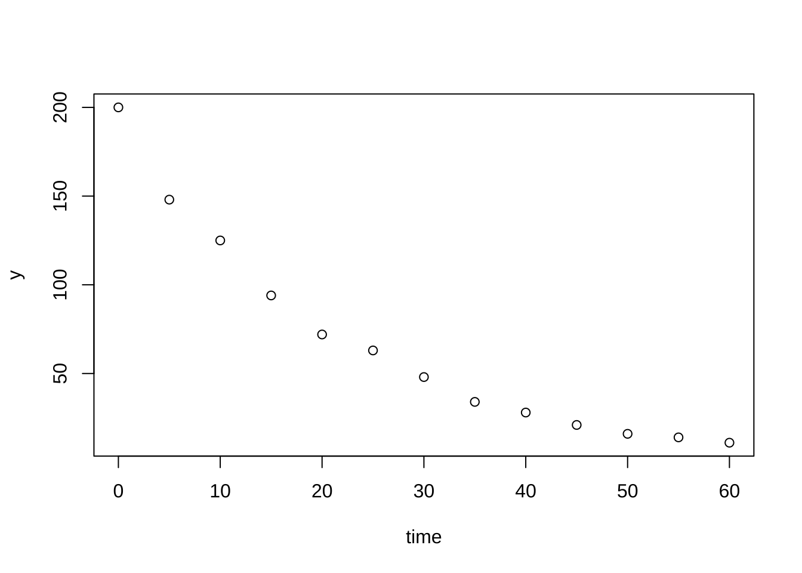
bug2 <-regbook::bug
bug2$logy <- log(bug2$y)
fitlog <- lm(logy~time, bug2)
plot(logy~time, bug2)
abline(fitlog)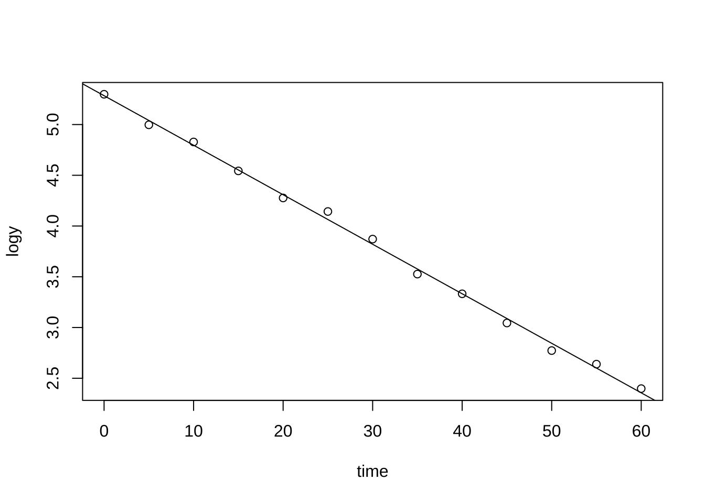
Box-Cox 변환은 다음과 같이 수행한다. 패키지 MASS 의 함수 boxcox 를 이용한다.
foot:발길이(mm), 양말을 벗은 상태로 측정하였고 오른쪽 발만 측정하였다.forearm: 팔안쪽길이(mm), 손목부터 팔꿈치가 접히는 부분까지의 길이이다. 오른쪽 팔만 측정하였다.
plot(foot ~ forearm, data=aflength)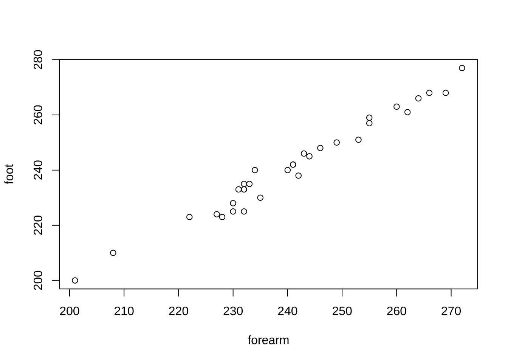
boxcox(lm(foot ~ forearm, data=aflength))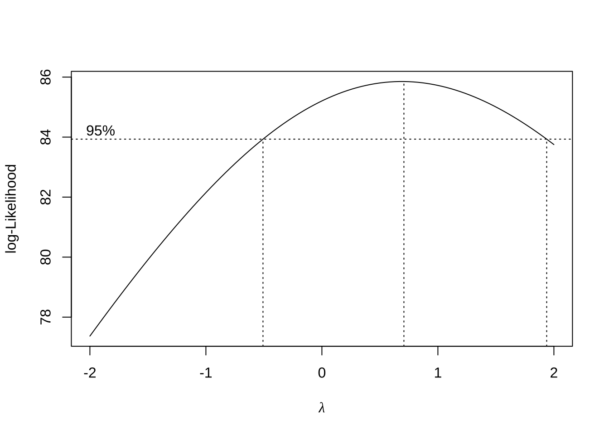 - 예제 4.11
woolfm1 <- lm(cycle~length + amplitude + load, data=wool)
plot(woolfm1)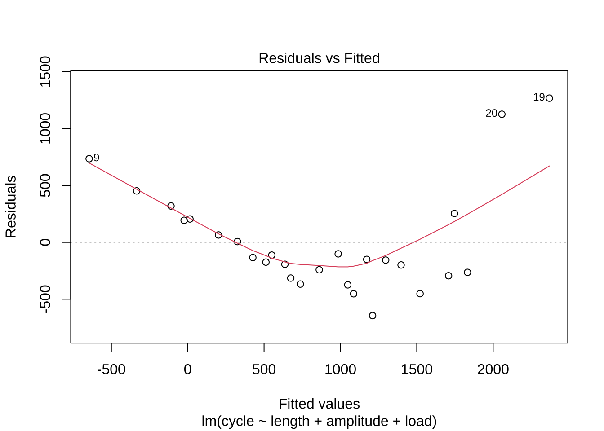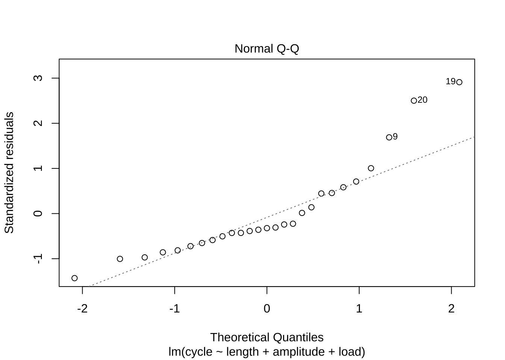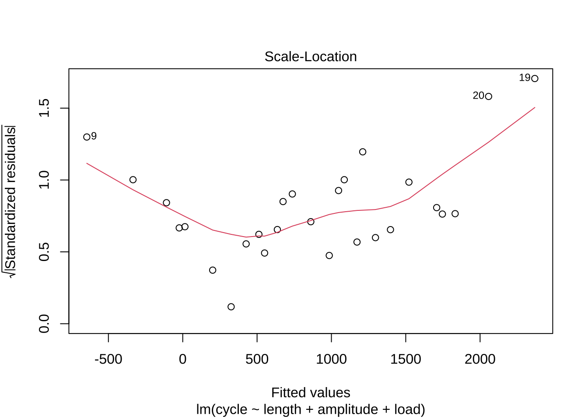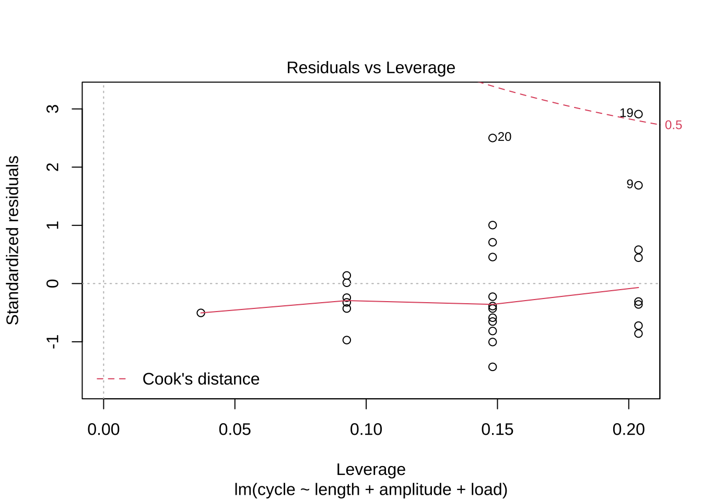
wool$logcycle <- log(wool$cycle)
boxcox(woolfm1)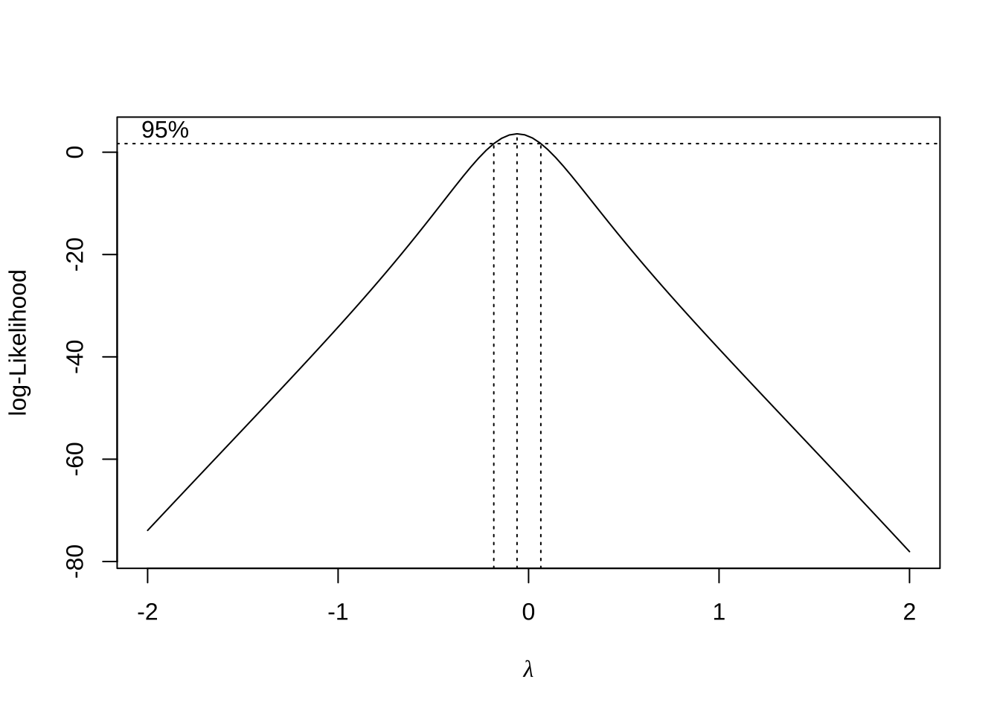
woolfm2 <- lm(logcycle~length + amplitude + load, data=wool)
plot(woolfm2)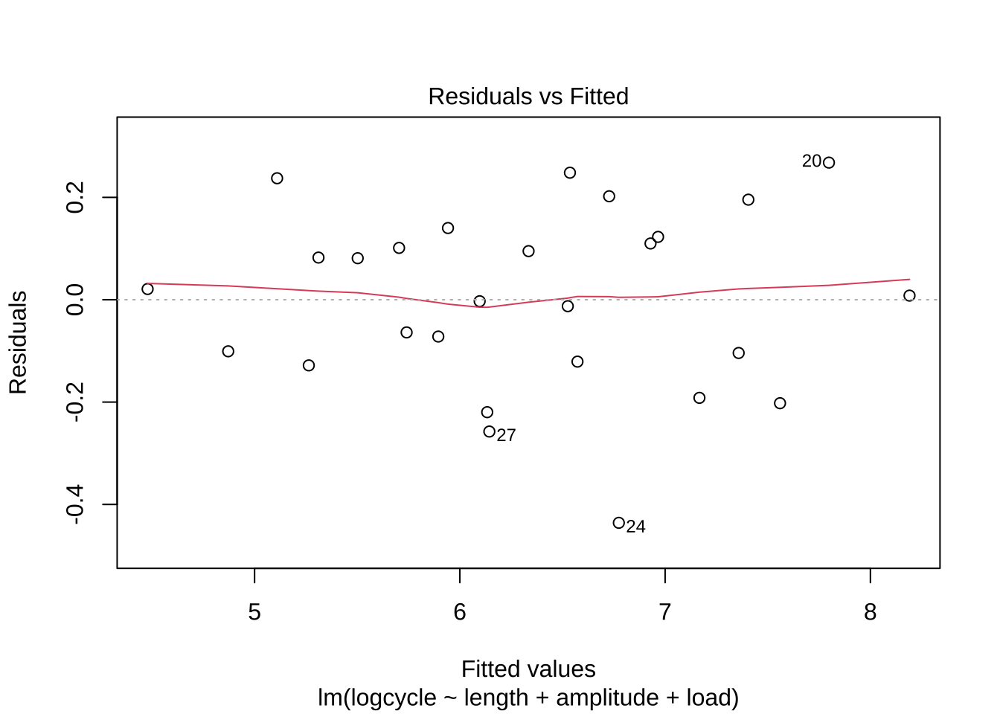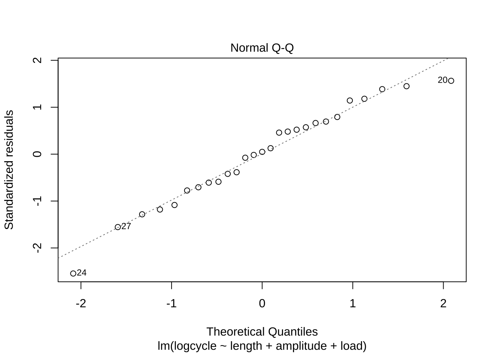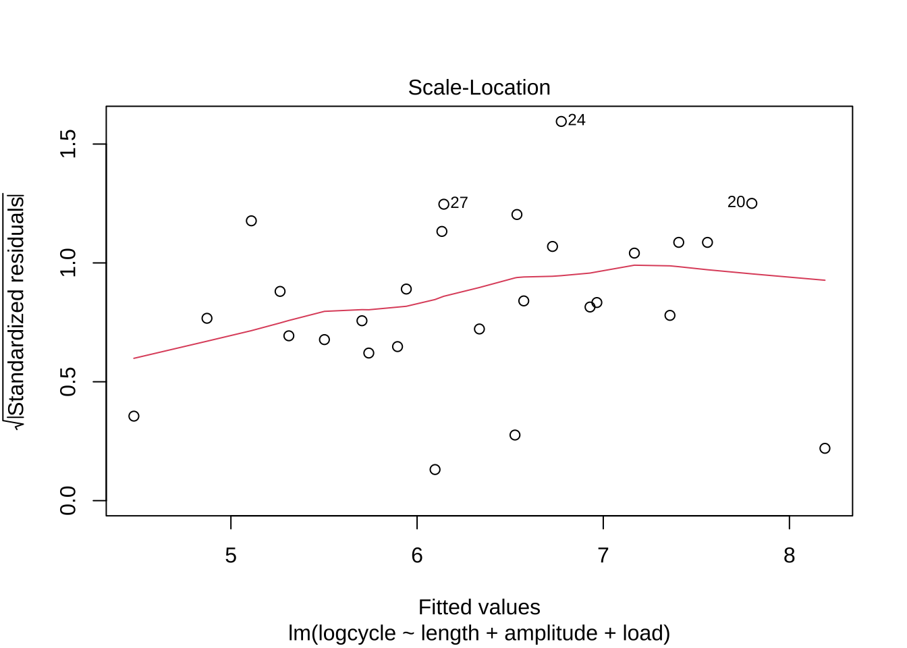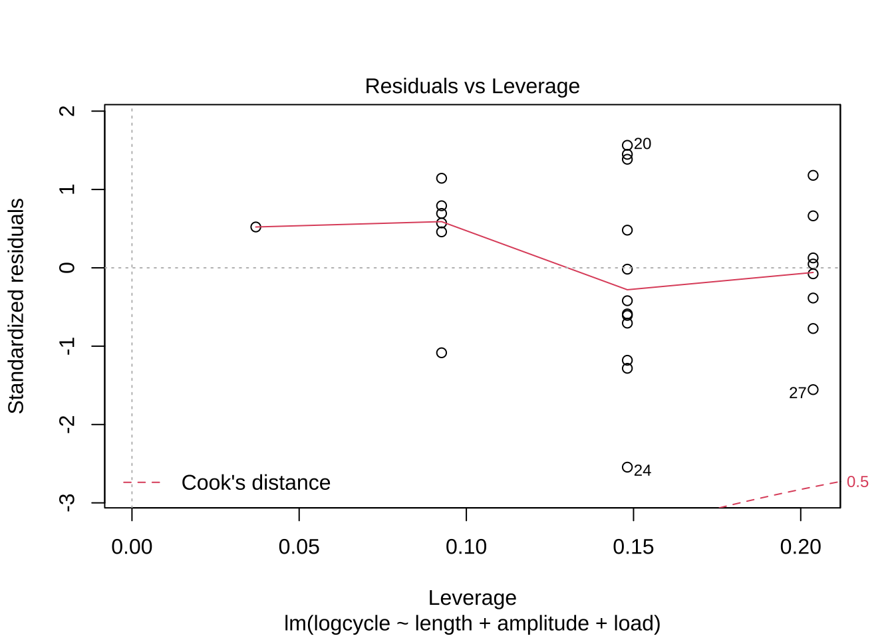
2.6 다중공선성
usedcars2 <- usedcars %>% mutate(ccmile = cc + mileage)
fitcoll1 <- lm(price ~ year + mileage + cc + automatic + ccmile, usedcars2)
summary(fitcoll1)##
## Call:
## lm(formula = price ~ year + mileage + cc + automatic + ccmile,
## data = usedcars2)
##
## Residuals:
## Min 1Q Median 3Q Max
## -177.35 -63.91 -0.99 70.34 212.69
##
## Coefficients: (1 not defined because of singularities)
## Estimate Std. Error t value Pr(>|t|)
## (Intercept) 5.253e+02 3.998e+02 1.314 0.200823
## year -5.800e+00 9.283e-01 -6.247 1.55e-06 ***
## mileage -2.263e-03 7.211e-04 -3.138 0.004324 **
## cc 3.888e-01 2.022e-01 1.923 0.065958 .
## automatic 1.653e+02 3.986e+01 4.147 0.000339 ***
## ccmile NA NA NA NA
## ---
## Signif. codes: 0 '***' 0.001 '**' 0.01 '*' 0.05 '.' 0.1 ' ' 1
##
## Residual standard error: 101.1 on 25 degrees of freedom
## Multiple R-squared: 0.9045, Adjusted R-squared: 0.8892
## F-statistic: 59.21 on 4 and 25 DF, p-value: 2.184e-122.6.1 예제 4.14
모형을 적합해 보자.
hald.lm <- lm(y~ ., data=hald)
summary(hald.lm)##
## Call:
## lm(formula = y ~ ., data = hald)
##
## Residuals:
## Min 1Q Median 3Q Max
## -3.1750 -1.6709 0.2508 1.3783 3.9254
##
## Coefficients:
## Estimate Std. Error t value Pr(>|t|)
## (Intercept) 62.4054 70.0710 0.891 0.3991
## x1 1.5511 0.7448 2.083 0.0708 .
## x2 0.5102 0.7238 0.705 0.5009
## x3 0.1019 0.7547 0.135 0.8959
## x4 -0.1441 0.7091 -0.203 0.8441
## ---
## Signif. codes: 0 '***' 0.001 '**' 0.01 '*' 0.05 '.' 0.1 ' ' 1
##
## Residual standard error: 2.446 on 8 degrees of freedom
## Multiple R-squared: 0.9824, Adjusted R-squared: 0.9736
## F-statistic: 111.5 on 4 and 8 DF, p-value: 4.756e-07상관계수 행렬의 고유값을 계산해 보자.
R <- cor(hald[2:5])
R## x1 x2 x3 x4
## x1 1.0000000 0.2285795 -0.8241338 -0.2454451
## x2 0.2285795 1.0000000 -0.1392424 -0.9729550
## x3 -0.8241338 -0.1392424 1.0000000 0.0295370
## x4 -0.2454451 -0.9729550 0.0295370 1.0000000solve(R)## x1 x2 x3 x4
## x1 38.49621 94.11969 41.88410 99.7858
## x2 94.11969 254.42317 105.09139 267.5394
## x3 41.88410 105.09139 46.86839 111.1451
## x4 99.78580 267.53942 111.14509 282.5129diag(solve(R))## x1 x2 x3 x4
## 38.49621 254.42317 46.86839 282.51286eigenval <- eigen(R)$values
eigenval## [1] 2.235704035 1.576066070 0.186606149 0.001623746sqrt(max(eigenval)/eigenval)## [1] 1.000000 1.191022 3.461339 37.106342VIF를 구해보자.
car::vif(hald.lm)## x1 x2 x3 x4
## 38.49621 254.42317 46.86839 282.51286summary(regbook::vif(hald.lm))##
## VIF:
## x1 x2 x3 x4
## 38.50 254.42 46.87 282.51
##
## Variance Proportion:
## Eigenvalues Cond.Index x1 x2 x3 x4
## 1 2.235704035 1.000000 0.002632084 0.0005589686 0.001481988 0.0004753347
## 2 1.576066070 1.191022 0.004269804 0.0004272931 0.004954638 0.0004572915
## 3 0.186606149 3.461339 0.063519491 0.0020822791 0.046495910 0.0007243995
## 4 0.001623746 37.106342 0.929578621 0.9969314592 0.947067464 0.9983429744\(x_2\)를 제외하고 분석해 보자.
hald.lm2 <- lm(y~ x1 + x3 + x4, data=hald)
summary(hald.lm2)##
## Call:
## lm(formula = y ~ x1 + x3 + x4, data = hald)
##
## Residuals:
## Min 1Q Median 3Q Max
## -2.9323 -1.8090 0.4806 1.1398 3.7771
##
## Coefficients:
## Estimate Std. Error t value Pr(>|t|)
## (Intercept) 111.68441 4.56248 24.479 1.52e-09 ***
## x1 1.05185 0.22368 4.702 0.00112 **
## x3 -0.41004 0.19923 -2.058 0.06969 .
## x4 -0.64280 0.04454 -14.431 1.58e-07 ***
## ---
## Signif. codes: 0 '***' 0.001 '**' 0.01 '*' 0.05 '.' 0.1 ' ' 1
##
## Residual standard error: 2.377 on 9 degrees of freedom
## Multiple R-squared: 0.9813, Adjusted R-squared: 0.975
## F-statistic: 157.3 on 3 and 9 DF, p-value: 4.312e-08summary(regbook::vif(hald.lm2))##
## VIF:
## x1 x3 x4
## 3.678 3.460 1.181
##
## Variance Proportion:
## Eigenvalues Cond.Index x1 x3 x4
## 1 1.8683737 1.000000 0.0720157120 0.07053018 0.02229687
## 2 0.9838532 1.378056 0.0002285765 0.02382939 0.79011946
## 3 0.1477731 3.555775 0.9277557115 0.90564042 0.18758367